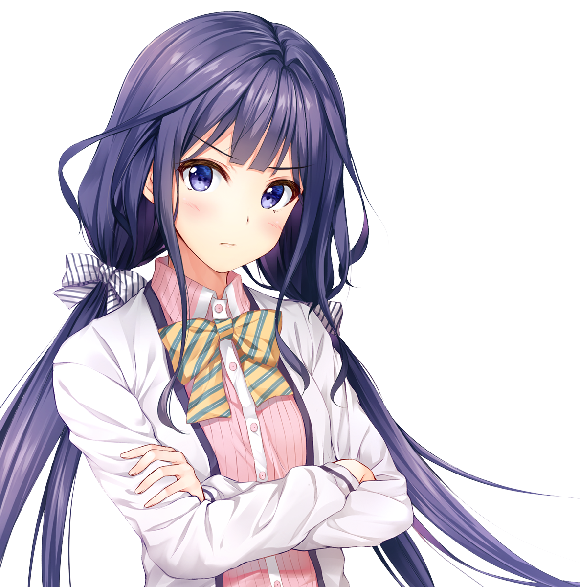
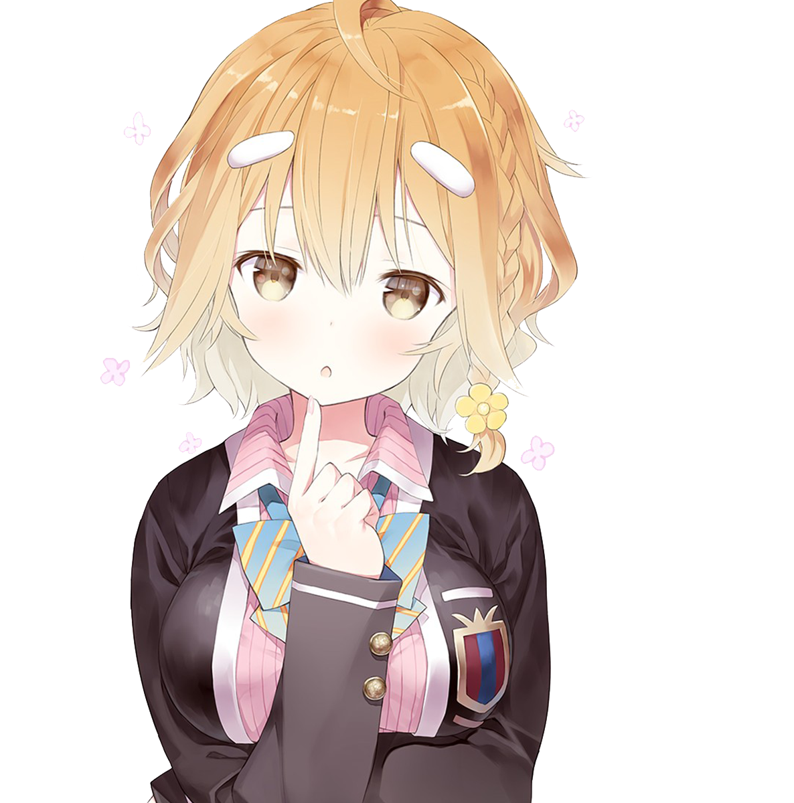
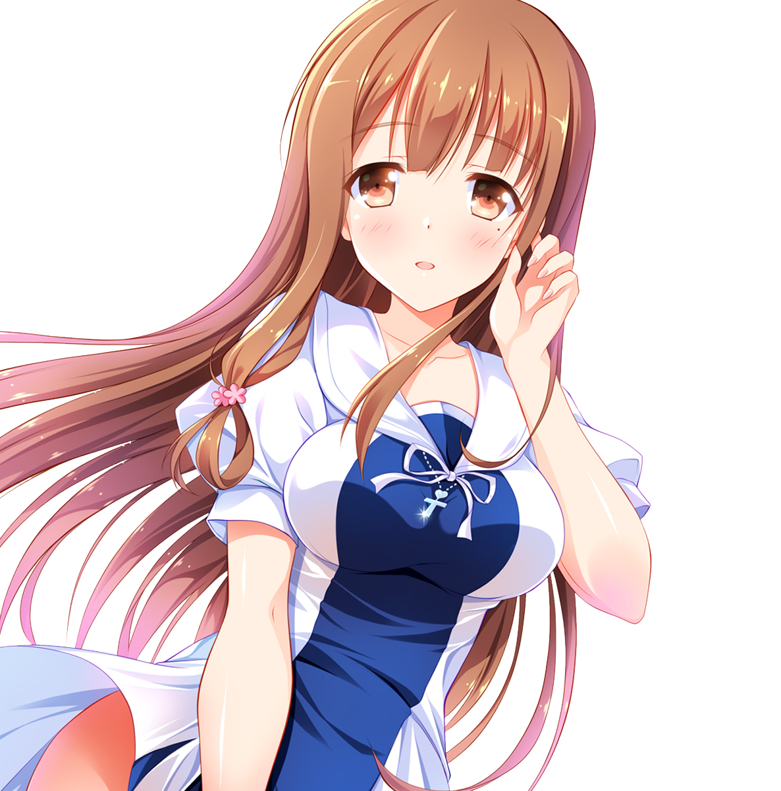
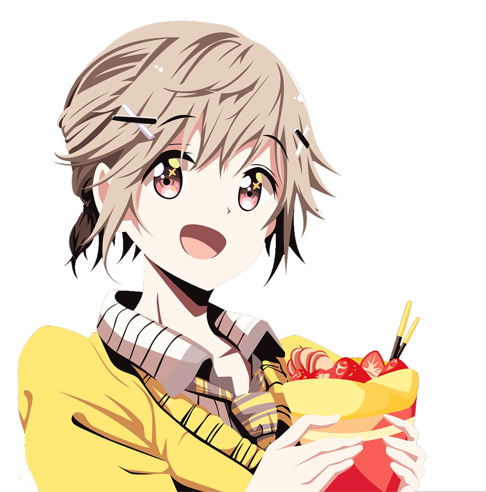

Masamune Makabe è il principale protagonista della serie manga, Masamune-kun no Revenge.
Ritorna come un giovane bello e in forma per vendicarsi di Aki Adagaki(Principessa bruttale), la ragazza che gli ha spezzato il cuore. Con l'aiuto di Yoshino, la cameriera di Aki, sta cercando il momento per spezzare il cuore alla Principessa Brutale

Aki Adagakiè la principale protagonista femminile della serie, Masamune-kun no Revenge.
Aki è una bella ragazza con lunghi capelli neri (per i manga) / blu (per gli anime), i quali sono sempre disordinati. Ha una frangia appena sopra i suoi occhi azzurri. È bella e magra, anche se ha l'abitudine di mangiare più di una persona normale.

Yoshino Koiwai è uno dei personaggi principali e la serva di Aki Adagaki.
Yoshino ha i capelli corti e castano chiaro con una piccola treccia a lato e due ornamenti color crema applicati sui lati opposti dei suoi capelli, mentre i suoi occhi sono anche castani. Ha anche un seno notevolmente grande.

Neko Fujinomiya è uno dei personaggi femminili principali introdotti che si innamorano di Masamune.
Neko è una bella ragazza con lunghi capelli castano chiaro e occhi marroni.
A prima vista, sembra essere una ragazza molto gentile e premurosa. È conosciuta per essere gentile con tutti. È molto gentile, educata ed è innamorata di Masamune.

Kojuro Shuri è un ragazzo dall'aspetto femminile(Trap). Porta dei fermagli sui capelli e soltimante porta una coda di cavallo. Ha i capelli castano chiaro e gli occhi rosa.
Kojuro è un amico gentile e premuroso. All'inizio sembra femminile, ma è davvero un ragazzo. Solitamente ama mangiare dolci ma è negato per lo studio.